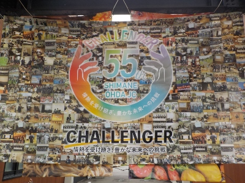
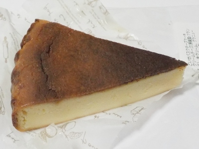

島根県大田市仁摩町大国42番地1
更新日 : 2026/09/27

美味しいものを食べに仁摩町のイベントに行きました。
近くのマルシェイベントだと直接店舗に行けばいいじゃんって話になりますが、遠くだとあちこち行けないので集合してると嬉しいです。

いろいろ買ったんですが、これはごいせ仁摩のチーズケーキです。場所オリジナルな商品も食べた方がいいですよね。
見た目がいい感じです。しっとりとしていて重たいですが、チーズ味は少なめであっさりとした感じでした。300円でこの質量があれば十分かな。
【おいしいものを食べよう。】【たくさん寝よう。】
【ソロ活をしよう!】【季節感のあることをしよう。】【動画視聴はほどほどに。】【当サイトの全てのコンテンツは無断転載禁止です。】